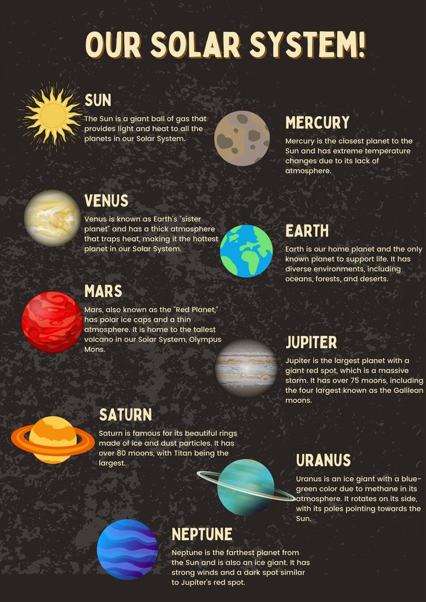

Astronomy News
Home
Planets
Quiz
News

Sun
Mercury
Venus
Earth
Mars
Jupiter
Saturn
Uranus
Neptune
Pluto
Latest News in Astronomy
Mercury
Your browser does not support the video tag.
Venus
Your browser does not support the video tag.
Earth
Your browser does not support the video tag.
Mars
Your browser does not support the video tag.
uranus
Your browser does not support the video tag.
jupiter
Your browser does not support the video tag.
saturn
Your browser does not support the video tag.
Neptune
Your browser does not support the video tag.